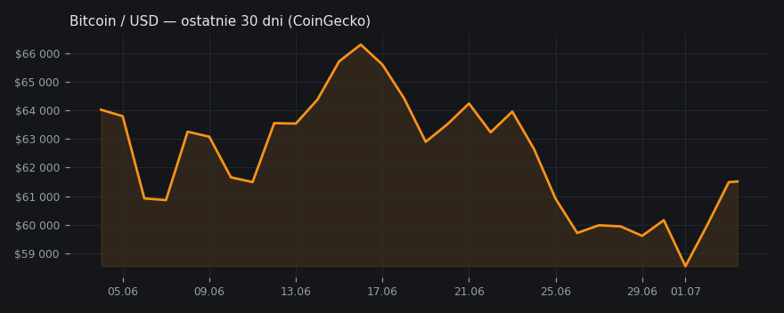

Binance bez licencji MiCA — exodus z największej giełdy
Binance wycofał wniosek o unijną licencję i polscy użytkownicy muszą przenosić środki.
✍️ Draft na X
binance przespał mica i teraz cała europa pakuje walizki. fear & greed na 21, extreme fear — a to nie hack, nie rug, tylko papierologia. rynek panikuje przez formularz. jak twoje krypto dalej leży na giełdzie bez licencji, to nie jest inwestowanie, tylko odkładanie problemu. nie jest to porada inwestycyjna.
📎 podepnij do wpisu:
Bitcoin — 30 dni

🧠 Ściąga — żebyś wiedział o czym piszesz
Tło na chłopski rozum
Od lipca giełdy krypto w UE muszą mieć licencję MiCA — unijne przepisy, które określają, kto może legalnie obsługiwać klientów w Europie. Binance, największa giełda świata, złożyła wniosek późno i w Grecji, a na kilka dni przed deadlinem go wycofała. W praktyce: polscy użytkownicy Binance muszą przenieść środki na licencjonowane giełdy albo na własne portfele. Stąd nagły ruch i nerwówka na rynku.
Kto co mówi
- Phil Konieczny: Binance grał na czas i przegrał; radzi przenosić środki na giełdy z licencją MiCA lub portfele sprzętowe.
Jeden kanał w temacie — brak porównania stanowisk.
Twarde dane
- Bitcoin: $61 655 (+1.0% / 24h) · CoinGecko
- Dominacja BTC: 55.6% · CoinGecko
- Fear & Greed Index: 21 (Extreme Fear) · alternative.me
Poziomy wg kanałów
- BTC: 55 000 USD — poziom obrony wg analizy technicznej
Wykresy
- BTC/USD — wykres
- Mapa likwidacji BTC
- Bitcoin — 30 dni
- Fear & Greed Index
Co z tego wynika
Krótkoterminowo odpływy z Binance mogą dociążyć sentyment; strukturalnie wygrywają giełdy z licencją.